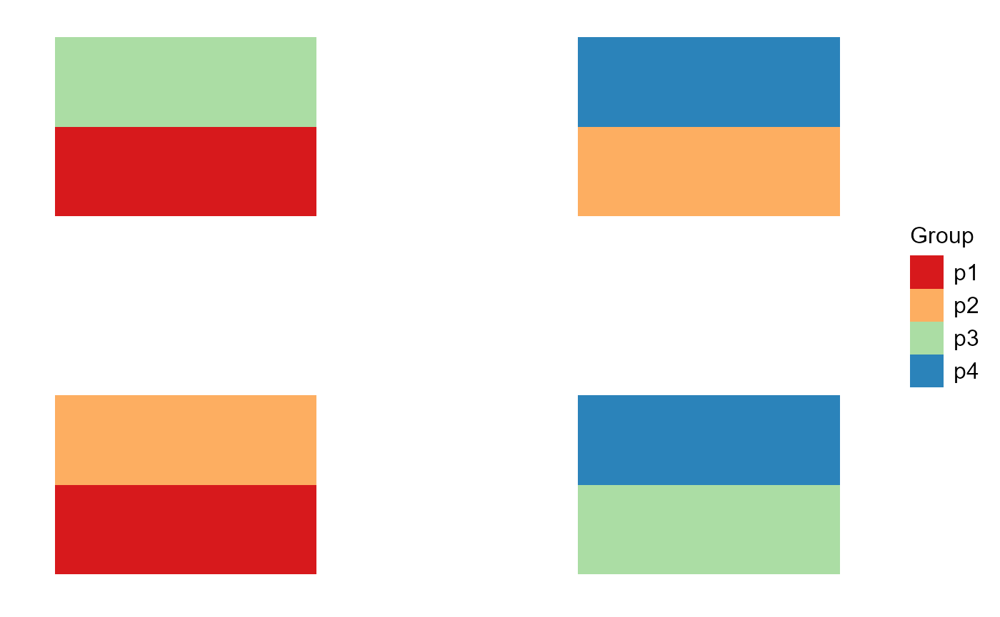
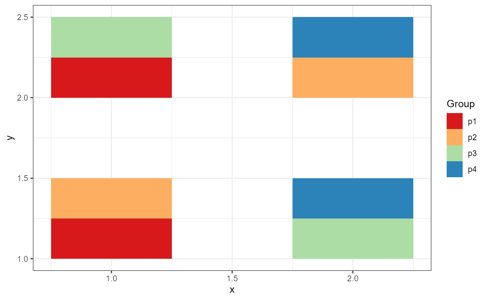
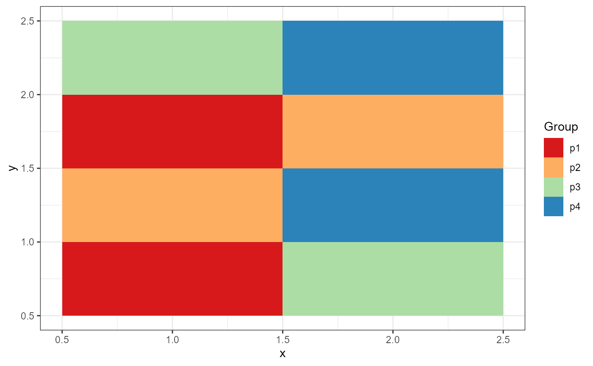
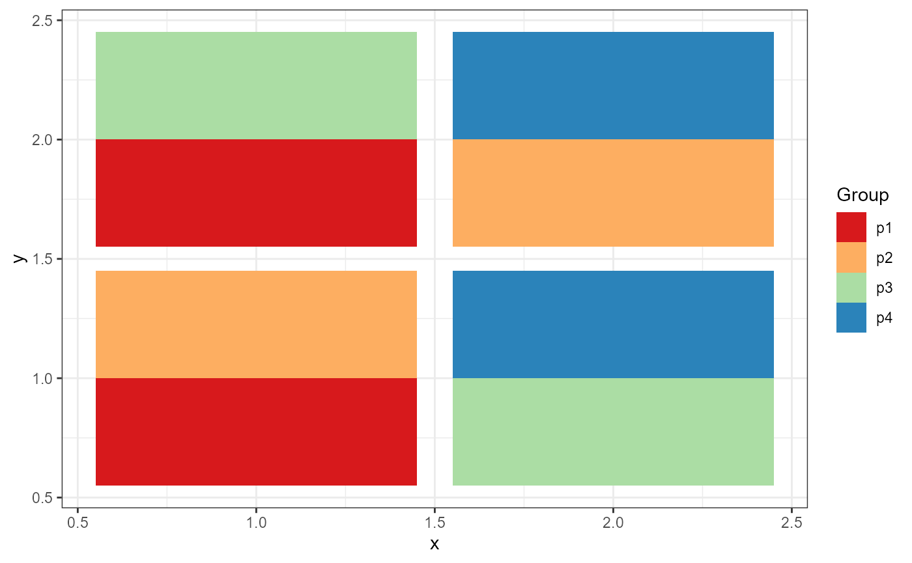
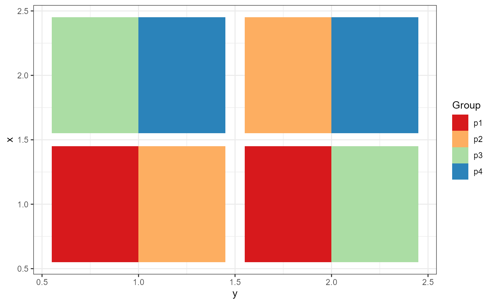
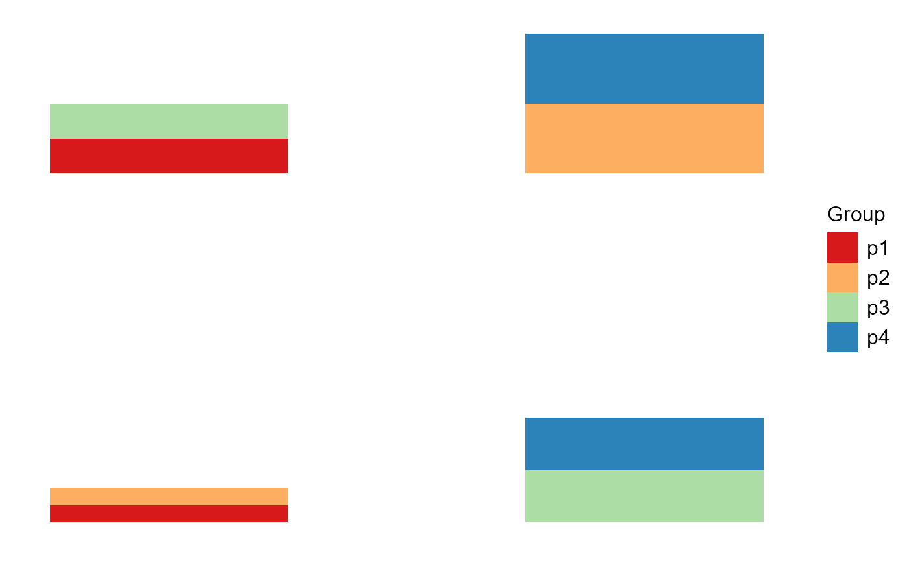
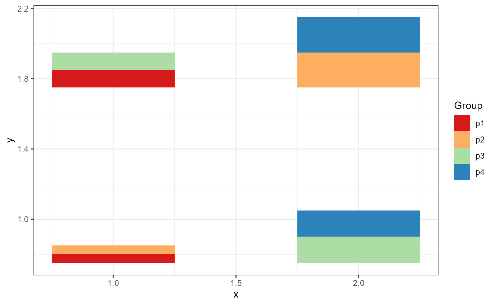
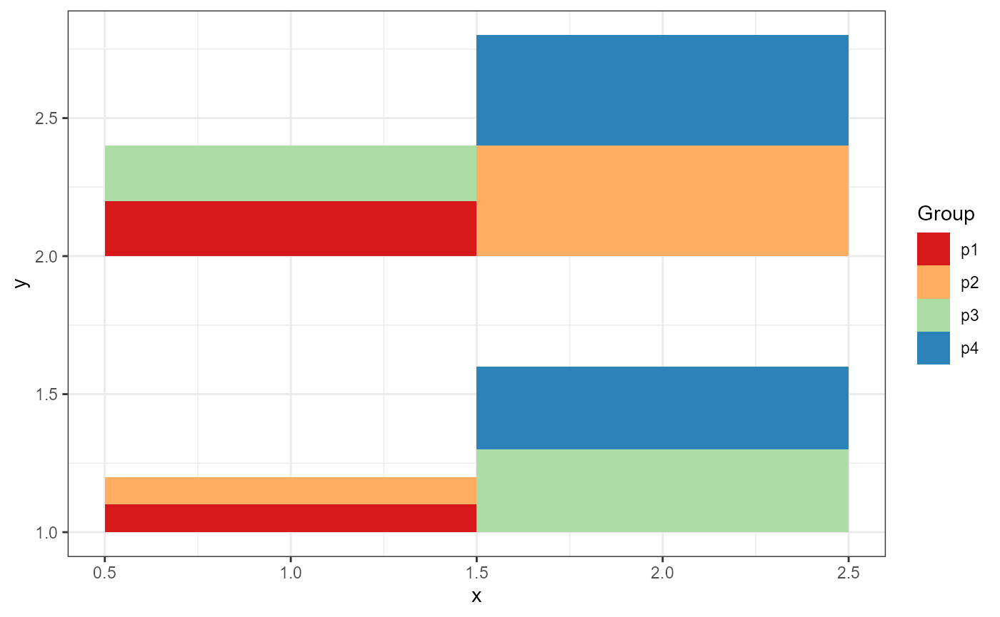
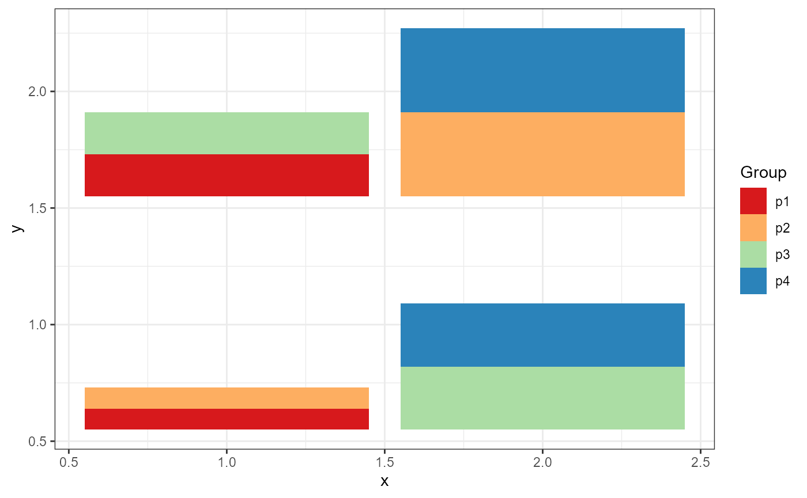
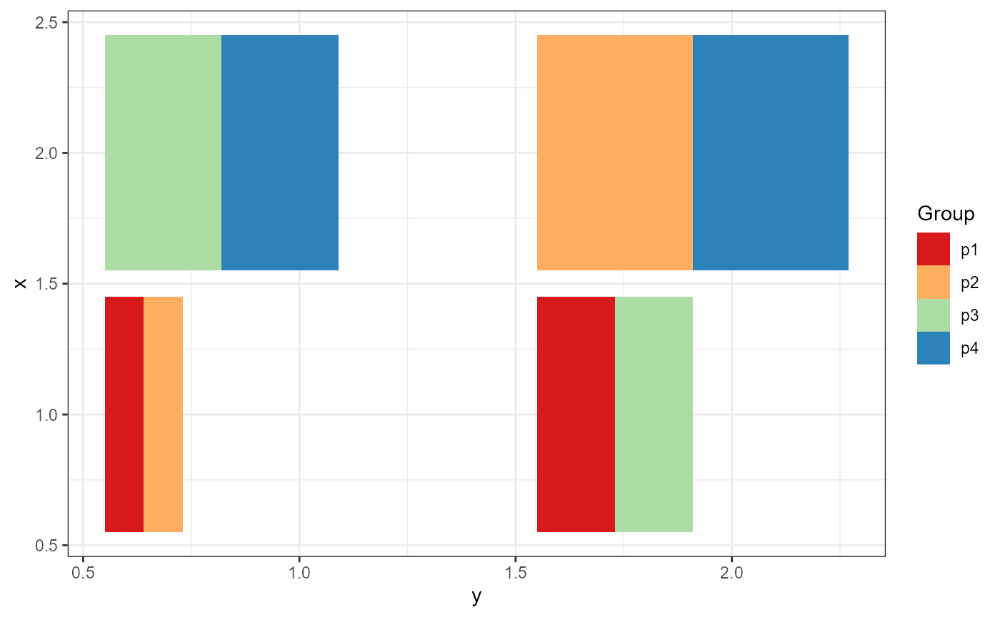

Customizing scatterbar
Jean Fan
2024-07-01
Source:vignettes/customizing_scatterbar.Rmd
customizing_scatterbar.RmdSimulate some data for demo purposes
library(scatterbar)
pos <- data.frame(x = c(1,1,2,2),
y = c(1,2,1,2))
prop <- matrix(c(0.5, 0.5, 0, 0,
0.5, 0, 0, 0.5,
0, 0.5, 0.5, 0,
0, 0, 0.5, 0.5), nrow=4)
rownames(pos) <- rownames(prop) <- c('a','b','c','d')
colnames(prop) <- c('p1', 'p2', 'p3', 'p4')
print(pos)## x y
## a 1 1
## b 1 2
## c 2 1
## d 2 2
print(prop)## p1 p2 p3 p4
## a 0.5 0.5 0.0 0.0
## b 0.5 0.0 0.5 0.0
## c 0.0 0.0 0.5 0.5
## d 0.0 0.5 0.0 0.5Examples of customization using ggplot2
create_scatterbar(prop, pos)
create_scatterbar(prop, pos) +
ggplot2::theme_bw() + ggplot2::ylab('y')
create_scatterbar(prop, pos,
x_scale = 1, y_scale = 1) +
ggplot2::theme_bw() + ggplot2::ylab('y')
create_scatterbar(prop, pos,
x_scale = 1, y_scale = 1,
padding_x = 0.1, padding_y = 0.1) +
ggplot2::theme_bw() + ggplot2::ylab('y')
create_scatterbar(prop, pos,
x_scale = 1, y_scale = 1,
padding_x = 0.1, padding_y = 0.1) +
ggplot2::theme_bw() + ggplot2::ylab('y') +
ggplot2::coord_flip()
What if my proportions don’t add up to 1?
prop <- matrix(c(0.1, 0.2, 0, 0,
0.1, 0, 0, 0.4,
0, 0.2, 0.3, 0,
0, 0, 0.3, 0.4), nrow=4)
rownames(prop) <- c('a','b','c','d')
colnames(prop) <- c('p1', 'p2', 'p3', 'p4')
print(prop)## p1 p2 p3 p4
## a 0.1 0.1 0.0 0.0
## b 0.2 0.0 0.2 0.0
## c 0.0 0.0 0.3 0.3
## d 0.0 0.4 0.0 0.4
create_scatterbar(prop, pos)
create_scatterbar(prop, pos) +
ggplot2::theme_bw() + ggplot2::ylab('y')
create_scatterbar(prop, pos,
x_scale = 1, y_scale = 1) +
ggplot2::theme_bw() + ggplot2::ylab('y')
create_scatterbar(prop, pos,
x_scale = 1, y_scale = 1,
padding_x = 0.1, padding_y = 0.1) +
ggplot2::theme_bw() + ggplot2::ylab('y')
create_scatterbar(prop, pos,
x_scale = 1, y_scale = 1,
padding_x = 0.1, padding_y = 0.1) +
ggplot2::theme_bw() + ggplot2::ylab('y') +
ggplot2::coord_flip()